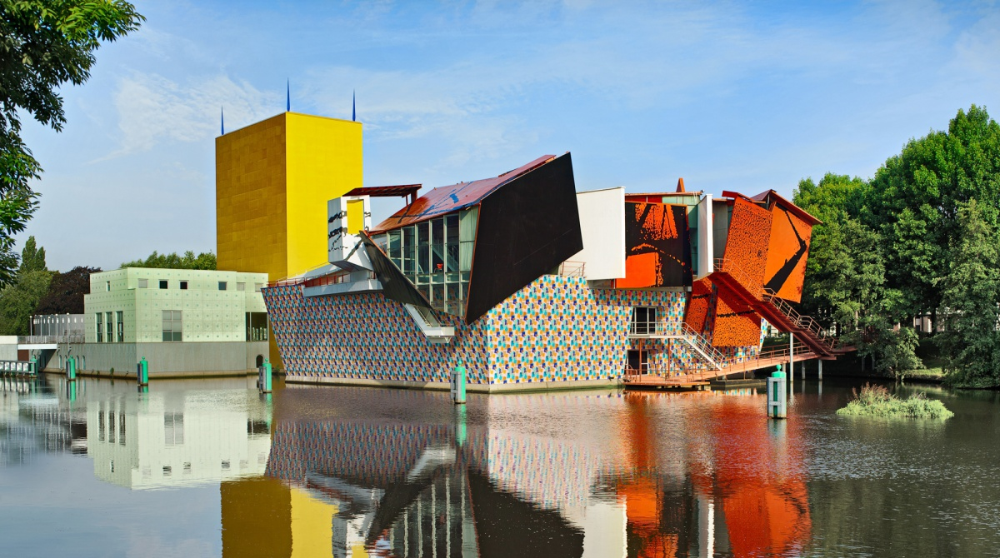

Een mooie bezienswaardigheid in Groningen is de Martinitoren. De toren is onderdeel van de Martinikerk en heeft als bijnaam d’Olle Grieze, wat Gronings is voor de oude grijze. De toren is al zo’n 500 jaar oud en heeft een rijke historie. Door de eeuwen heen heeft de toren onder andere een brand overleeft, is de bliksem ingeslagen en stortte de toren bijna in. Het is een van de meest bekendste bezienswaardigheden van de stad Groningen en torent boven alle gebouwen in de omgeving uit. De toren is bijna 97 meter hoog. De Martinitoren heeft de een na grootste luidklokken van Nederland. De klokken komen uit de 16e eeuw en zijn ontworpen door Hendrick van Trier. Je kunt de Martinitoren ook beklimmen. Hiervoor moet je wel de trap in de toren beklimmen van zo’n 300 traptreden. Maar je work-out wordt zeker beloond. Vanaf de top van de Martinitoren heb je namelijk een schitterend uitzicht over Groningen en omgeving. De toren is 7 dagen van de week geopend voor bezoek
 Het Groninger Museum werd in 1874 opgericht. Sinds 1894 heeft het Groninger Museum een eigen gebouw. Tot 1994 was dit het neo-gotische pand aan de Praediniussingel. Na een grote schenking in 1987 kreeg de organisatie de mogelijkheid om een nieuw gebouw te laten maken. Het huidige Groninger Museum gebouw werd in 1994 door koningin Beatrix geopend. Tot op de dag van vandaag is het ontwerp aanleiding voor discussie over moderne museumarchitectuur.